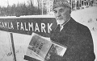

Gustaf Elof Lindmark
Snickare och bygdeforskare, författare. Blev 83 år.
| Född: | 1908-10-20 Gamla Falmark, Falmark, Skellefteå sn. [1] | |
|---|
| Död: | 1992-01-07 Norrböleg 8 A, Skellefteå, Sankt Olovs fs, Skellefteå kn. [2] | Änkling 1987-11-15. |
|---|
| Vigsel: | 1932-02-07 Gamla Falmark, Skellefteå lfs, Skellefteå sn. [3] |
|---|
| Levde: | 1981 Brahe 28, Norrböleg 8 A, Skellefteå, Sankt Olovs fs, Skellefteå kn. [4] |
|---|
Noteringar
Elof Lindmark kulturstipendiat
Elof Lindmarks bok "En krönika om Falmarks by" är den främsta orsaken till att kulturnämnden beslutat utse honom till stipendiat.
Jag var 67 år när jag började med det här. Min nyfikenhet över vad min farmor hette fick mig att börja forska i det förflutna. Jag fortsatte sedan med att ta reda på hela min släkttavla, ända tillbaka till 1600-talet: Samtidigt skrev jag den här boken om Falmarks by, berättar han.
Då fanns det inget skrivet om by som är en av de äldsta i Skelleftebygden. Dess anor sträcker sig tillbaka till 1200-talet. Man vet att Magnus Ladulås var på ett besök i Falmark 1274. Stipendiaten är född och uppvuxen i Falmark. Han har varit byggnadsarbetare i hela sitt liv, och byggt många av husen i byn.
Jag kan varenda gårds historia långt tillbaka. Det mesta har jag tagit reda på genom att läsa gamla handlingar.
Att Elof samtidigt som han tog reda på sin egen släkts ursprung skrev boken om Falmarks by, visar lita av hans kapacitet och orsaken till stipendiet.
Även Gideon Karlsson, Åbyn, Brännfors har utsetts till kulturstipendiat. Han har liksom Elof Lindmark har jobbat med folklivsforskning. Han har forskat dels i den egna byns historia och släktforskning. Det har utmynnat i tre volymer om Åbyns historia.
Publicerad 1978-11-21
Waldemar Mellquist
Personhistoria
| Årtal | Ålder | Händelse |
|---|
| 1908 |
|
Födelse 1908-10-20 Gamla Falmark, Falmark, Skellefteå sn [1] |
| 1913 |
4 år |
Makan Emmy Viktoria Lundgren föds 1913-02-12 Gamla Falmark, Skellefteå lfs, Skellefteå sn [5] |
| 1931 |
23 år |
Modern Jenny Helena Fahlman dör 1931-12-25 Gamla Fahlmark, Bureå fs, Bureå sn |
| 1932 |
23 år |
Vigsel Emmy Viktoria Lundgren 1932-02-07 Gamla Falmark, Skellefteå lfs, Skellefteå sn [3] |
| 1953 |
44 år |
Fadern Johan Alfred Lindmark dör 1953-09-16 G. Falmark 2:22, Bureå fs, Bureå sn [6] |
| 1981 |
|
Levde Emmy Viktoria Lundgren 1981 Brahe 28, Norrböleg 8 A, Skellefteå, Sankt Olovs fs, Skellefteå kn [4] |
| 1987 |
79 år |
Makan Emmy Viktoria Lundgren dör 1987-11-15 Norrböleg 8 A, Skellefteå, Sankt Olovs fs, Skellefteå kn [3] |
| 1992 |
83 år |
Död 1992-01-07 Norrböleg 8 A, Skellefteå, Sankt Olovs fs, Skellefteå kn [2] |
Dokument
Källor
| [1] | SCB Födda AC Skellefteå lfs 477/1908 |
| |
| | |
| [2] | RTB 92 / SPAR 92 / SPAR 95 |
| |
| | |
| [3] | RTB 87 / SPAR 90 |
| |
| | |
| [4] | Mtl Västerbottens län 1981 |
| |
| | |
| [5] | SCB Födda AC Skellefteå lfs 79/1913 |
| |
| | |
| [6] | DB, PA / DOR 52-60 |
| |
|
|  |
1978-11-21. Elof Lindmark, kulturstipendiat
Foto/text: Waldemar Mellquist, Norran
|
|
{kind=link}